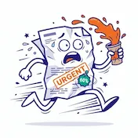
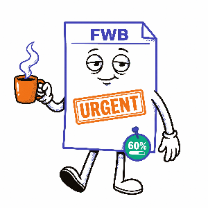
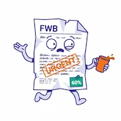

Apprendre autrement.
Progresser vraiment.
Des exercices interactifs en Maths, Français et Sciences. Gratuit. Sans circulaire. Sans réforme surprise.
Parce que 60%, ça se prépare. Et on est là pour ça.



Les exercices
Choisis ta matière. On promet de ne pas parler de décret pendant les 25 premières minutes.
Ressources
Fiches, astuces et conseils — pour réviser sans perdre le wifi ni la volonté de vivre.
Fiches de révision
Équations du 1er degré
Rassemble les x d'un côté, les constantes de l'autre. Effectue la même opération des deux côtés. Vérifie en réinjectant la solution dans l'équation de départ.
Révise sur Quizlet →Les 8 figures de style
Métaphore, comparaison, hyperbole, personnification, métonymie, allégorie, antithèse, oxymore. Demande-toi ce qui est comparé, exagéré ou humanisé.
Révise sur Quizlet →Les états de la matière
Fusion, vaporisation, condensation, solidification, sublimation, condensation solide. À l'échelle moléculaire : agitation thermique = chaleur.
Révise sur Quizlet →« Avec le nouveau décret, vous aurez besoin de 60% pour réussir. Bonne nouvelle : SavoirPlus, c'est gratuit, et ça ne manifeste pas. »
Vidéo — Sciences en mouvement
Complète tes révisions avec cette vidéo, puis entraîne-toi sur Quizlet avec les flashcards états de la matière.
Les états de la matière — Professeur Louphoque — Flashcards Quizlet →
Contact
Une question ? Un bug ? Une idée brillante ? On répond. (Contrairement à certaines circulaires.)